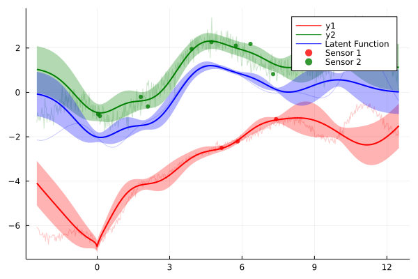

Sensor Fusion

You are seeing the HTML output generated by Documenter.jl and Literate.jl from the Julia source file. The corresponding notebook can be viewed in nbviewer.
using AbstractGPs
using Plots
using Random
using Stheno
########################### Define and inspect our model ###########################
rng = MersenneTwister(123456);In this example, f is an unknown real-valued function that we wish to infer. To achieve this, we have access to two sensors. The first returns noisy estimates of f, where we have been reliably informed by whoever designed the sensor that the mean of the noise is given by sin(x) - 5 + sqrt(abs(x)), and that it's variance is low (1e-2). How the designer estimated this function, and why a sensor might possibly have such a strange mean error, is beyond the scope of this example. The second returns biased measurements of f, where the bias is known to be 3.5. The model below specifies a model for this scenario.
model = @gppp let
# Define a smooth latent process that we wish to infer.
f = GP(SEKernel())
# Define the two noise processes described.
noise1 = sqrt(1e-2) * GP(WhiteKernel()) + (x->sin.(x) .- 5.0 .+ sqrt.(abs.(x)))
noise2 = sqrt(1e-1) * GP(3.5, WhiteKernel())
# Define the processes that we get to observe.
y1 = f + noise1
y2 = f + noise2
end;Generate some toy observations of y₁ and y₂.
x1 = GPPPInput(:y1, sort(rand(rng, 3) * 10));
x2 = GPPPInput(:y2, sort(rand(rng, 10) * 10));
x = BlockData(x1, x2);
ŷ = rand(rng, model(x));
ŷ1, ŷ2 = split(x, ŷ);Compute the posterior processes.
model′ = posterior(model(x), ŷ);Sample jointly from the posterior processes and compute posterior marginals.
xp_ = range(-2.5, stop=12.5, length=500);
xp_f = GPPPInput(:f, xp_);
xp_y1 = GPPPInput(:y1, xp_);
xp_y2 = GPPPInput(:y2, xp_);
xp = BlockData(xp_f, xp_y1, xp_y2);
model′_xp = rand(rng, model′(xp, 1e-9));
f′xp, y1′xp, y2′xp = split(xp, model′_xp);
########################### Plot results ###########################
gr();
posterior_plot = plot();Plot posterior over y1.
plot!(posterior_plot, xp_, model′(xp_y1); color=:red, label="y1");
plot!(posterior_plot, xp_, y1′xp; color=:red, label="", linewidth=1, linealpha=0.2);Plot posterior over y2.
plot!(posterior_plot, xp_, model′(xp_y2); color=:green, label="y2");
plot!(posterior_plot, xp_, y2′xp; color=:green, label="", linewidth=1, linealpha=0.2);Plot posterior over f.
plot!(posterior_plot, xp_, model′(xp_f); color=:blue, label="Latent Function");
plot!(posterior_plot, xp_, f′xp; color=:blue, label="", linewidth=1, linealpha=0.2);Plot samples on which we conditioned.
scatter!(posterior_plot, x1.x, ŷ1;
markercolor=:red,
markershape=:circle,
markerstrokewidth=0.0,
markersize=4,
markeralpha=0.8,
label="Sensor 1",
);
scatter!(posterior_plot, x2.x, ŷ2;
markercolor=:green,
markershape=:circle,
markerstrokewidth=0.0,
markersize=4,
markeralpha=0.8,
label="Sensor 2",
);
posterior_plot
This page was generated using Literate.jl.